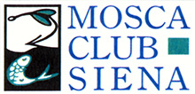

Chi Siamo: Lo Statuto
Articolo n.1
E’ costituita l’Associazione “ MOSCA CLUB SIENA “ (d’ora in poi indicato sinteticamente come Club), con sede sociale in Siena, c/o i locali del Dopolavoro Ferroviario - P.le Rosselli . Il Club è costituito a tempo indeterminato. Il simbolo sociale è costituito dallo stemma di seguito riportato.

Articolo n.2
Scopo del Club è quello di diffondere i principi e la tecnica della pesca con la mosca artificiale , in tutte le sue espressioni favorendo lo scambio di conoscenze ed esperienze tra i Soci e mediante incontri con altre associazioni e Clubs.
A tal fine il Club provvede con raccolte di opere dedicate , con l’organizzazione di corsi di apprendimento, di riunioni e conferenze riservate ai Soci e/o aperte a terzi con tutti i mezzi che verranno ritenuti idonei. E’ altresì finalità primaria del Club orientare l’esercizio della pesca con la mosca nell’assoluto rispetto dell’ambiente e nella salvaguardia degli ecosistemi, con particolare riguardo a quelli fluviali. Rientra nei programmi del Club l’organizzazione di attività, rivolte ai pescatori e non , finalizzate ad una migliore conoscenza e gestione del patrimonio ambientale.
Articolo n.3
Per conseguire i propri scopi, il Club potrà ricercare ed intrattenere contatti con Enti ( Pubblici e Privati), Associazioni e singoli che saranno cointeressati a progetti e iniziative di interesse per il Club o proposte dallo stesso .
Il Club potrà altresì promuovere o aderire a stabili Associazioni di Clubs che siano accomunati da scopi sociali uguali o compatibili , ciò tuttavia a condizione che il Club possa mantenere la propria autonomia ed individualità.
Articolo n.4
Il Club è apolitico , apartitico ed aconfessionale e non ha fini di lucro.
E’ fatto divieto di distribuire, anche indirettamente, utili, avanzi di gestione, fondi e riserve.
Il patrimonio del Club è costituito dalle quote associative, dagli eventuali contributi esterni, donazioni o lasciti, nonché da quanto acquisito mediante l’utilizzo degli stessi.
Articolo n.5
Il Club è contrario alle gare di pesca , ma approva competizioni che, non comportando in alcun modo la cattura del pesce, tendano comunque a stimolare e favorire la diffusione della pesca con la mosca e la conoscenza degli ecosistemi.
Articolo n.6
I Soci del Club si distinguono nelle seguenti categorie:
Soci Fondatori
Soci Ordinari
Soci Onorari.
Sono Soci Fondatori coloro che hanno dato vita al Club sottoscrivendone lo Statuto .
Sono Soci Ordinari coloro che verranno accettati nel Club dopo la costituzione dello stesso.
Sono Soci Onorari coloro che, pur non avendone mai fatto parte, hanno contribuito volontariamente alla persecuzione degli scopi del Club.
Ogni Socio viene iscritto nel ruolo del Club alla categoria di appartenenza.
Tutti i Soci indistintamente sono tenuti alla stretta osservanza delle norme statutarie, dei regolamenti del Club nonché delle delibere regolarmente determinate dall’Assemblea e dal Consiglio Direttivo e debbono, per quanto possibile , cooperare al conseguimento degli scopi sociali.
Articolo n.7
Chi intende essere ammesso come Socio dovrà farne richiesta anche verbale al Consiglio Direttivo impegnandosi ad attenersi al presente statuto ed ad osservarne gli eventuali regolamenti e le delibere adottate dagli organi del Club.
La qualifica di Socio Ordinariosi assume dal rilascio della tessera sociale e dal pagamento della quota Associativa.
La qualifica di Socio Onorario viene conferita dal Consiglio Direttivo, con apposita riunione, anche su proposta di un singolo Socio.
Articolo n.8
I Soci Fondatori e quelli Ordinari sono soggetti al pagamento di una quota sociale annuale la cui somma viene stabilita , entro il 31 dicembre di ogni anno, dal Consiglio Direttivo . La quota è intrasmissibile e non rivalutabile.
I Soci Onorari non sono soggetti al pagamento della quota sociale annuale.
Articolo n.8 bis
Le tessere sociali hanno validità per l'anno solare, il termine ultimo per il pagamento della quota sociale viene fissato al 28 Febbraio di ogni anno.
Il Consiglio Direttivo determina le modalità per il pagamento delle quote.
Articolo n.9
Lo status di Socio si perde:
Con la radiazione per morosità deliberata dal Consiglio Direttivo dopo aver preso atto che il Socio non ha provveduto al versamento della quota sociale annualeentro la scadenza fissata dallo Statuto (art. 8 bis).
Mediante dimissioni , da comunicare al Consiglio Direttivo per Iscritto . Le dimissioni hanno effetto immediato. Il Socio dimessosi non ha diritto alcuno al rimborso delle quote sociali versate e non può pretendere alcunché sui beni del Club.
Con l’espulsione , quando il comportamento del socio sia incompatibile con il mantenimento dello status, sia per violazione delle norme statutarie e regolamentari o delle delibere determinate dagli Organi del Club, sia perché in contrasto con i principi generali del Club. L’espulsione di un Socio deve essere sottoscritta unitamente dal Consiglio Direttivo.
In caso di decesso , dove gli eredi non hanno diritto alcuno ne di rilevarne lo status ne i beni sociali.
Articolo n.10
Sono Organi del Club:
L’Assemblea dei Soci
Il Consiglio Direttivo
Articolo n.11
L’Assemblea è l’Organo sovrano, volitivo e deliberativo del Club. All’Assemblea partecipano , con diritto di parola e di voto, tutti i Soci , di tutte le categorie, in regola con il pagamento della quota sociale.
L’Assemblea regolarmente costituita rappresenta l’universalità dei Soci e le sue delibere, se prese con le prescritte maggioranze, vincolano tutti i Soci ancorché non intervenuti o dissenzienti.
L’Assemblea è presieduta dal Presidente del Club ed in caso di assenza , nell’ordine , dal Vice Presidente o da un membro del Consiglio Direttivo nominato dall’Assemblea.
Il Presidente deve constatare la validità di costituzione dell’Assemblea e detta al segretario il verbale della stessa. L’Assemblea delibera con le maggioranze previste dallo Statuto. Il verbale , che dovrà essere conservato in apposito raccoglitore , è sottoscritto dal Segretario e da tre Soci , registrato su apposito registro e vistato dal Presidente che si assume la responsabilità della trascrizione .
Sono di competenza dell’Assemblea dei Soci :
la nomina del Consiglio Direttivo;
la decisione sui programmi del Club , generali e particolari ;
ogni decisione comunque riguardante la vita del Club.
Articolo n.12
L’Assemblea può essere convocata in via Ordinaria o Straordinaria. L’Assemblea Ordinaria si riunisce in ogni caso una volta all’anno, presso la sede del Club entro il mese di Aprile per l’approvazione dei bilanci, consuntivo e preventivo del Club. L’Assemblea è convocata dal Presidente mediante comunicato affisso nella sede del Club almeno 15 giorni prima della data fissata per l’Assemblea, contenente l’ora di prima e seconda convocazione e l’ordine del giorno da discutere. L’Assemblea sarà validamente costituita con la presenza della metà dei Soci aventi diritto al voto in prima convocazione, con i Soci presenti in seconda convocazione. Le delibere dell’Assemblea Ordinaria, sono valide a maggioranza assoluta dei votanti.
Articolo n.13
L’Assemblea Straordinaria può essere convocata con le modalità previste per l’Assemblea Ordinaria, ogni qualvolta sia ritenuto necessario dal Consiglio Direttivo con decisione presa a maggioranza assoluta dei membri, o qualora ne facciano richiesta un terzo dei soci. L’Assemblea Straordinaria delibera su ogni questione inerente la vita del Club ed in particolare :
modifica dello Statuto e scioglimento del Club ;
revoca della nomina del Consiglio Direttivo o di alcuno dei Consiglieri ; i Consiglieri oggetto di voto non possono votare;
partecipazione del Club ad Associazioni di Clubs.
Le precedenti tre delibere sono approvate con il voto favorevole della metà dei Soci regolarmente iscritti più uno. Ogni altra delibera per la quale non sia prevista in statuto una particolare maggioranza è presa a maggioranza dei votanti. Per la validità dell’assemblea ed il suo svolgimento vale quanto previsto nei precedenti articoli.
Articolo n.14
Il Consiglio Direttivo dura in carica due anni e i suoi membri possono essere rieletti. Il Consiglio Direttivo è formato da 5 membri che sono scelti tra i soci , il consiglio elegge nel suo seno le seguenti cariche :
PRESIDENTE (che acquisisce anche lo status di Presidente del Club) ;
SEGRETARIO (che ha anche funzioni di Vicepresidente del Consiglio e Segretario del Club) ;
TESORIERE (che ha anche funzioni di Vicepresidente del Consiglio) ;
Articolo n.15
Il Consiglio Direttivo si riunisce su comunicazione scritta o telefonica del Presidente o su richiesta di almeno tre membri. Per la validità delle riunioni è richiesta la presenza di almeno tre membri del Consiglio. Le decisioni sono deliberate a maggioranza assoluta dei voti. Delle sedute il segretario redige il verbale su apposito registro che deve essere firmato dal Presidente e dai membri del Consiglio. In caso di dimissioni di uno o più membri del Consiglio Direttivo i rimanenti membri devono convocare l’Assemblea perché provveda alla loro sostituzione.
Articolo n.16
Il Consiglio Direttivo è investito dei più ampi poteri per la gestione sia ordinaria che straordinaria del Club, ed in particolare :
attua le delibere dell’Assemblea ;
predispone il bilancio preventivo e consuntivo del Club;
rappresenta il Club in ogni contatto con Enti, Associazioni, Organi Pubblici o Privati;
da concreta attuazione agli indirizzi di massima degli scopi e delle attività del Club anche predisponendo regolamenti interni ;
promuove e coordina attività ;
vaglia domande di ammissione dei Soci ;
determina e propone annualmente le quote sociali ed i contributi.
Articolo n.17
Tutte le cariche sociali sono gratuite. Il Consiglio Direttivo potrà tuttavia provvedere a rimborsare le spese sostenute e documentate di chi , precedentemente autorizzato dal consiglio o dall’Assemblea , abbia agito in rappresentanza del Club.
Articolo n.18
In caso di scioglimento del Club, le operazioni relative sono affidate a tre liquidatori nominati dall’Assemblea. Eventuali residui attivi del patrimonio del Club saranno devoluti in beneficenza.
Articolo n.19
Per quanto non previsto dal presente statuto si fa riferimento alla normativa di Legge.
Siena li 27 GENNAIO 2000
Elenco dei Soci Fondatori:
MONACI Piero
ANDREONI Loris
ANDREI Marcello
RABAZZI Nicola
LOSI Duccio
FERRI Carlo
MORELLI Stefano
CUCCUINI Fabrizio
GALLERINI Fosco
BALDI Massimo
ZERINI Stefano
TRECCI Luca
MARZUCCHI Stefano
PETRINI Filippo
MORELLI Gianmarco
MARZI Claudio
DINI Piero
* La presente copia dello statuto contiene le variazioni apportate con le Assemblee Straordinarie del 26 Aprile 2001 e 5 Giugno 2003
Il Consiglio direttivo 2018/2019
Presidente
Marco Salvini
Segretario
Marcello Andrei
Tesoriere
Piero Monaci
Consiglieri
Silvio Debolini
Leonardo Giovannelli